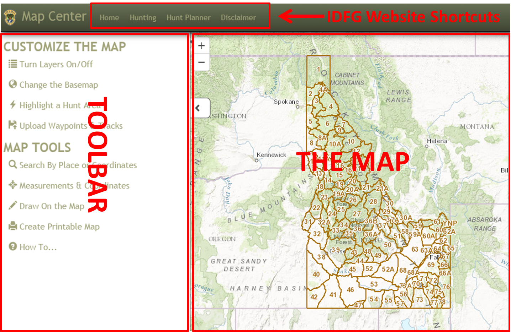
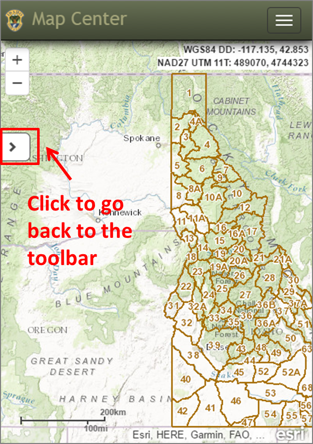
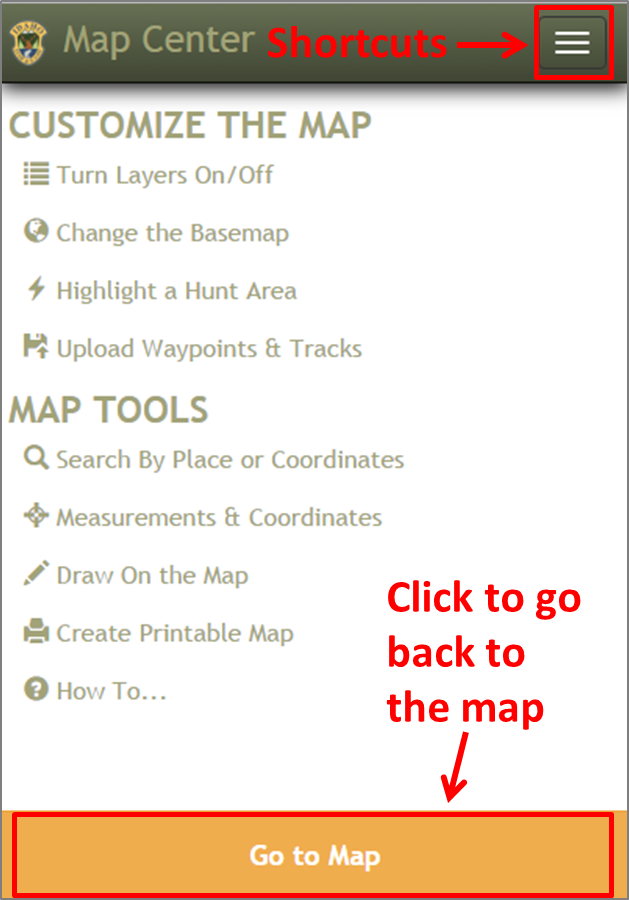

Main Screen Overview
GETTING STARTED: Main Screen Overview
This is a responsive application meaning it is "able to adapt to the context in which it is being viewed"1. Basically, this application should have the same look and feel on any device - desktop, tablet, or mobile. There will be some subtle differences as the screen size changes (see graphics).
DESKTOP/TABLET:

SMALL TABLET/MOBILE:
 
 To expand the toolbar in the Map View, click the icon. In the Toolbar View, hover over an icon to get a tooltip. Click on a tool title to open the tool. Click the 'Go to Map' button to go back to the Map View.
To expand the toolbar in the Map View, click the icon. In the Toolbar View, hover over an icon to get a tooltip. Click on a tool title to open the tool. Click the 'Go to Map' button to go back to the Map View.
IDFG Website Shortcuts The Map Toolbar
1 Definition from http://www.fastnetwebdesign.co.uk/blog/using-twitter-bootstrap-to-create-a-responsive-web-design-rwd-for-joomla
Created with the Personal Edition of HelpNDoc: Free Kindle producer